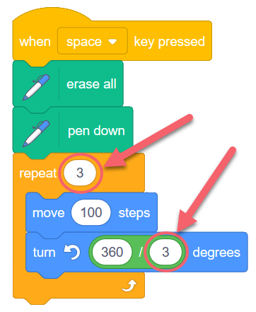
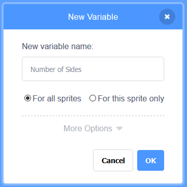
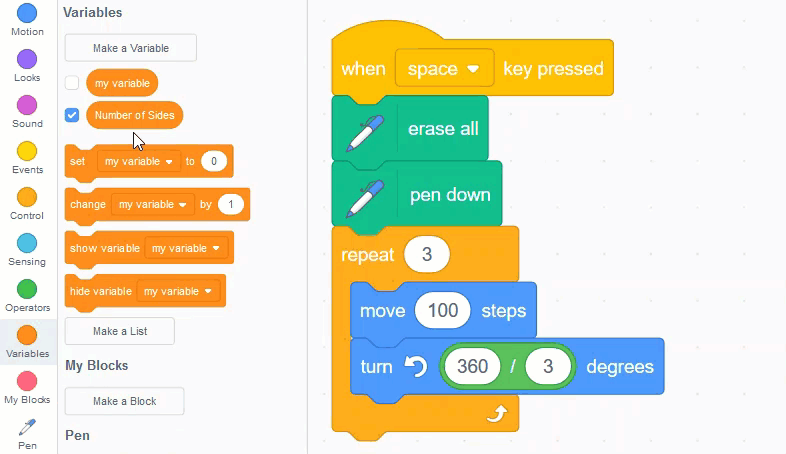
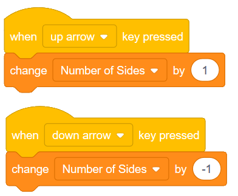
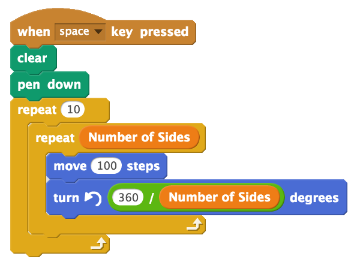
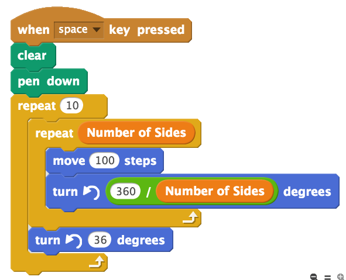
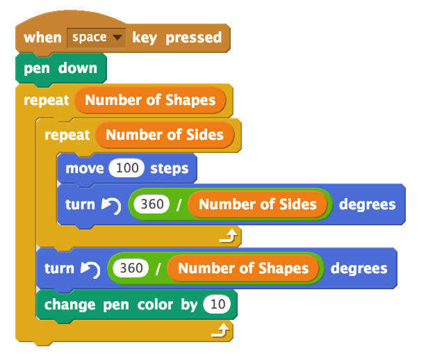
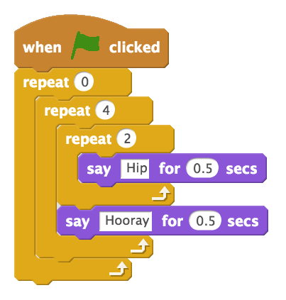

4. Drawing Polygons - Part 2 (Variables and Nested Repeat)¶
Quick Overview of Day
Use variables to improve the polygon drawing from last lesson. Refactor the code from yesterday so a regular polygon with any number of sides can be drawn with the same code. Explore interesting shapes using nested loops (a loop inside another loop).
If you’d prefer to watch a video, the following video demonstrates the same ideas I’ve described in text below.
4.1. Variables¶
When we drew a variety of regular polygons in the last section, we found that there was a pattern we could use, as shown in the image below:
The code above will draw a triangle, and as we discovered previously, if we were to change the two circled 3’s into 4’s, the code would draw a square (4-sided polygon) instead. In this situation, it would be really nice to have some way to easily set the value of both circled numbers to be the same thing. In other words, it would be great to be able to change the value of one to be a 5, and have the other automatically be a 5 as well. If we could do this, we would be able to draw any regular polygon by simply changing one number.
In order to create code that behaves in the manner described above, we need to introduce the idea of a variable. You have learned about variables in math class. In mathematics, they are just a symbol that can hold any number. In computer science, a variable is a container that can hold any number, but can also hold any other type of information (words, lists of numbers, video, sound, etc). In this situation, all we need a variable to hold is a number.
To create a variable in Scratch, click on the Variables tab, then click Make a Variable. Be sure to use useful names for your variables. For example, Number of Sides would be a useful, descriptive variable name for this example.
After creating a variable, you will now see a number of blocks appear in the Data tab. To make use of the variable, simply drag and drop the variable name into the locations you want to use it (in this case, the two circled locations from above).
If you press the space key, nothing will happen. This is because the default value of the variable you created is 0 (which you can see in the upper left corner of the stage). We need to set the value of the variable to something useful, as shown below:

Now click the flag, then press the space key. You should see the sprite draw a square. Although we have successfully made our script use variables, it might not yet seem like this is much better than our previous version of the code.
To demonstrate how using variables really does improve our code, let’s add two more events to our program, as shown below:
Notice that we are using the change variable by ** block, instead of the **set variable to block. This allows us to increase or decrease the value of the variable by some amount, regardless of what the value was before. You should now be able to press the space key to draw a polygon, press the up/down arrows a number of times, then press the space key to draw a different polygon.
4.2. Nested Repeat Blocks¶
Let’s add one more thing to our program. Say we wanted to repeat drawing the polygon multiple times. We can simply enclose the portion of our code that draws the polygon in another repeat block. The following code would draw the same polygon 10 times:
Although this does repeat the polygon drawing, it is really boring. The polygon is simply drawn on top of it’s previous location, so it looks just like it did before!
By adding one block, however, we can make this drawing a lot more interesting. Let’s add another turn block, inside the repeat 10, but outside the polygon drawing code.
The code above will draw something like the following (assuming that the Number of Sides variable is set to 4):

Note
Experiment with the numbers in the outer repeat (shown as a 10), and the outer turn (shown as a 36). What combinations of numbers allow the sprite to end facing the same direction it was facing when it started drawing? Why?
You might find it interesting to make one more variable in your sketch (perhaps named Number of Shapes), and change the pen color at different places in your drawing. Adapt your code to look like the following:
Note
Try moving the change pen color block so that it is right after the move 100 steps block. What do you expect the resulting image to look like?
4.3. Check Your Understanding¶
scratch-nested-loops1: Given the code below, how many times would the script below say “Hip” when you click the green flag?

scratch-nested-loops2: Given the code below, how many times would the script below say “Hooray” when you click the green flag?
scratch-nested-loops3: Given the code below, how many times would the script below say “Hooray” when you click the green flag?
4.4. Practice Problem¶
Work on your first Scratch assignment, for any remaining time.
Note
If your teacher did not assign you a project, you may want to consider making a short story to practice your Scratch skills. Be sure to utilize broadcasts, repeat blocks, and if-then blocks.